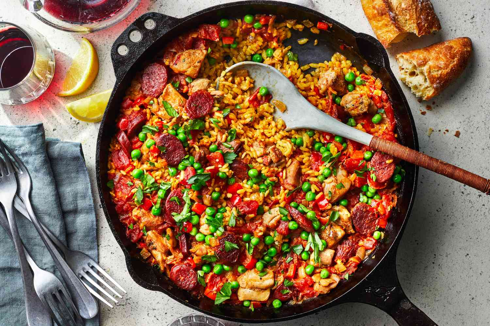

Paella

Description
Chicken and chorizo paella is a flavorful and hearty version of the
classic Spanish paella. This dish combines tender pieces of chicken and
spicy chorizo sausage with a fragrant blend of saffron-infused rice,
tomatoes, and a variety of vegetables. Originating from the Valencia
region of Spain, paella is traditionally cooked in a wide, shallow pan,
which allows the rice to cook evenly and develop a crispy bottom layer
known as "socarrat." This particular version of paella is rich in taste
and color, making it a festive and satisfying meal.
Ingredients
- 2 tablespoons olive oil
- 2 boneless, skinless chicken breasts, cut into bite-sized pieces
- 200g (7 oz) chorizo, sliced
- 1 large onion, finely chopped
- 4 cloves garlic, minced
- 1 red bell pepper, diced
- 1 yellow bell pepper, diced
- 2 cups paella rice (such as Bomba or Arborio)
- 1/2 cup white wine
- 1 can (400g/14 oz) diced tomatoes
- 4 cups chicken broth
- 1 teaspoon smoked paprika
- 1 teaspoon saffron threads, soaked in 2 tablespoons warm water
- 1 cup frozen peas
- Salt and pepper to taste
- Lemon wedges and chopped parsley for garnish
Steps
-
Cut the chicken breasts into bite-sized pieces and slice the chorizo.
Finely chop the onion, mince the garlic, and dice the red and yellow
bell peppers.
-
Heat the olive oil in a large paella pan or wide, shallow skillet over
medium heat.
-
Add the chicken pieces and cook until browned on all sides, about 5-7
minutes. Remove the chicken and set aside.
-
Add the chorizo to the pan and cook until it releases its oil and
becomes slightly crispy, about 3-4 minutes. Remove the chorizo and set
aside with the chicken.
-
In the same pan, add the chopped onion and cook until translucent, about
5 minutes.
-
Add the minced garlic and diced bell peppers, and cook for another 3-4
minutes until the vegetables are softened.
-
Stir in the paella rice and cook for 2 minutes, allowing it to absorb
the flavors.
-
Pour in the white wine to deglaze the pan, scraping up any browned bits
from the bottom. Cook until the wine is mostly evaporated.
-
Stir in the diced tomatoes, smoked paprika, and the saffron along with
its soaking liquid.
-
Pour in the chicken broth and bring the mixture to a boil. Season with
salt and pepper to taste.
-
Reduce the heat to low and return the chicken and chorizo to the pan,
mixing them evenly with the rice.
-
Simmer uncovered for about 20-25 minutes, or until the rice is tender
and most of the liquid is absorbed. Avoid stirring the rice to allow the
socarrat to form.
-
About 5 minutes before the rice is done, scatter the frozen peas over
the top of the paella. Continue cooking until the peas are heated
through.
-
Once the paella is cooked, remove it from the heat and let it rest for a
few minutes.
- Garnish with lemon wedges and chopped parsley before serving.